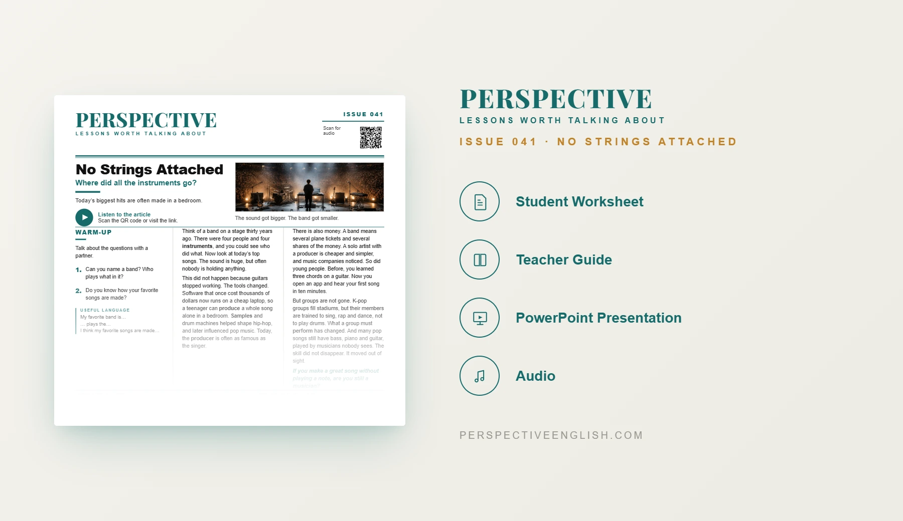

ISSUE 041
Modern Music Instruments ESL Lesson
Where did all the instruments go?
A ready-to-teach A1–A2 ESL lesson about how music is made today, from guitars and bands to laptops, samples and producers. Students discuss what makes someone a real musician.
CHOOSE YOUR LEVEL
Collection 08 includes Issues 041–045.
LESSON PREVIEW

ABOUT THIS LESSON
About This Modern Music ESL Lesson
This beginner A1–A2 lesson explores how the way people make music has changed. Students compare traditional bands with artists who create songs using laptops, samples and music software.
Students read and listen to an accessible article, learn five useful music words and answer five true-or-false questions. They discuss instruments, K-pop groups and whether making music on a computer is a real musical skill.
In groups, students decide which of eight different people count as musicians, practice key words in context, create their own four-person music act and write a guided 60–100 word opinion.
FROM THE ARTICLE
WHAT'S INCLUDED
What's Included in No Strings Attached?
- Magazine-style A1–A2 ESL student worksheet
- Original beginner-level modern music article and matching audio recording
- Five vocabulary words and five true-or-false comprehension questions
- Five supported discussion questions about bands, instruments and music production
- Who Counts as a Musician? critical-thinking task with eight musician profiles
- Language in Context practice with produce, sample, producer, instrument and perform
- Build Your Own Act speaking challenge: choose four performers and pitch your group
- 60–100 word guided opinion-writing task
- Teacher guide and complete answer key
- Ready-to-use classroom presentation
GET THE COMPLETE LESSON
Ready to Teach No Strings Attached?
Get the complete A1–A2 modern music ESL lesson individually, or get Issues 041–045 together in Perspective Collection 08.
Secure checkout and instant digital delivery through Payhip.